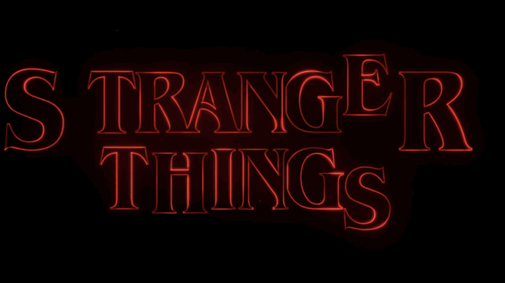

Stranger Things
¡Mi serie favorita por la trama y lo sobrenatural!
Me gusta mucho Stranger Things, yo diria que es la mejor para mi por la trama que lleva y lo sobrenatural, Stranger Things es una serie de ciencia ficción y suspenso ambientada en los años 80. La historia sigue a un grupo de amigos que descubre eventos sobrenaturales en su pueblo, enfrentándose a misterios y criaturas de otro mundo mientras crecen y luchan por sobrevivir.
